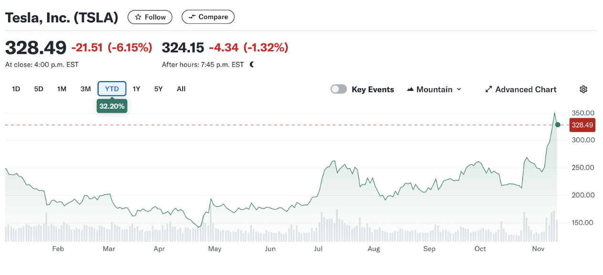

Curious how the recent election impacts the stocks in your portfolio? Trump’s re-election has already caused a surge in the stock market, offering both opportunities and insights for young investors.
Following the recent U.S. election, where Donald Trump was re-elected as the 47th President, the stock market has shown strong growth. This uptick has been fueled by expectations of pro-business policies, potentially benefiting sectors like tech, energy, and financial services. For students with a growing interest in finance, understanding these shifts can be key to building a resilient and profitable portfolio.
In this article, you’ll gain insights into how the election has influenced the stock market, what specific stocks and sectors are positioned to benefit from Trump’s policies, and how these changes could shape your investment strategy going forward.
Election Impact on the Stock Market
1. Stock Market Reaction: A Post-Election Surge
The stock market experienced a notable surge following Trump’s re-election, driven by investor optimism over anticipated pro-business policies. With impressive gains from stocks like Tesla (up 14.8%) and Bitcoin (up 8%). Additionally, the S&P 500 and dividend growth portfolios have both risen by 2.2%.
This rapid post-election climb highlights investor confidence in Trump’s potential policy approaches, which many believe will be favourable to corporations, especially those in technology, energy, and manufacturing.
2. Investment Strategy During Trump’s Presidency
While market enthusiasm is high, it’s essential to approach investment with a long-term mindset. As Anand emphasizes, relying solely on political outcomes to dictate investment strategy can be risky. Instead, focusing on long-term wealth-building principles, such as income growth and broad market trends, is critical. The market’s resilience often stems from free-market mechanisms and continuous innovation, regardless of political cycles. For student investors, this means maintaining a well-diversified portfolio to capitalize on growth without overreacting to political events.
3. Top Stocks Benefiting from Trump’s Policies
Tesla (TSLA)
Current Performance: Up 14.8%
Factors: Tesla, a leader in the electric vehicle (EV) market, is likely to benefit from lower corporate taxes for U.S. manufacturers and potential tariffs on foreign-made vehicles. Additionally, Trump’s stance on deregulation could favour Tesla’s AI and self-driving technology expansions, giving the company a competitive edge in the EV space.
Figure 1.0 Yahoo Finance: Tesla Stock Prices
>Visa (V)
Current Performance: Up 4.2%
Factors: Visa may see fewer regulatory pressures if the current DOJ lawsuit against them is dismissed. Long-term trends in digital payments also support Visa’s steady growth, positioning it as a strong investment for students interested in the financial sector. With high gross margins of 77% and a 13.5% revenue growth rate, Visa’s fundamentals remain solid.
Snap-On (SNA)
Current Performance: Up 5.5%
Factors: Snap-On, a company focused on tools and equipment, stands to gain from potential boosts in industrial manufacturing. Trump’s policies favouring lower tax rates for U.S. manufacturers could further support Snap-On’s growth, making it a promising stock for those interested in industrial manufacturing investments.
Oil & Gas Sector
Performance: Texas Pacific Land (TPL) up 6.23%
Factors: The energy sector, particularly oil and gas, could experience growth under a Trump administration focused on expanding U.S. energy production. Companies like Texas Pacific Land, which benefits from royalties, are likely to profit from this pro-energy stance, especially in the natural gas and pipeline segments.
Alphabet (GOOGL)
Current Performance: Up 3.78%
Factors: With a reduction in regulatory scrutiny anticipated, Alphabet may see fewer legal hurdles, allowing it to continue dominating the digital advertising space.
Trump’s re-election has already impacted the stock market, driving growth in key sectors like tech, energy, and finance. For student investors, staying informed on policy-driven market trends and maintaining a balanced, long-term strategy can lead to better financial outcomes. While certain companies may gain from policy shifts, building a diversified portfolio is crucial to managing risk and benefiting from market resilience.
What’s your strategy for navigating the post-election stock market? Share your thoughts in the comments, and stay tuned for more insights on the latest financial news!
Glossary of Financial Terms
Bitcoin: A decentralized digital currency operating on a peer-to-peer network, often used as a store of value and for digital transactions.
Dividend: A portion of a company's earnings distributed to shareholders, usually in the form of cash or additional shares.
Gross Margin: The difference between revenue and the cost of goods sold (COGS), expressed as a percentage of revenue.
Glossary of Companies
Alphabet (GOOGL): The parent company of Google, specializing in internet services, digital advertising, and various technology products, including AI and cloud computing.
Snap-On (SNA): A leading manufacturer of tools, diagnostic equipment, and repair services used in industrial and professional settings. Snap-On is known for its high-quality tools and durable equipment, benefiting from stable industrial demand.
Tesla (TSLA): An American electric vehicle and clean energy company that designs, manufactures, and sells electric cars, energy storage products, and solar technology. Tesla is an industry leader in EV technology and autonomous driving innovation.
Texas Pacific Land (TPL): A land trust company that owns extensive land and mineral rights in Texas. TPL benefits from royalties earned from oil, gas, and other resources extracted from its land, making it a strong performer in the energy sector.
Visa (V): A global financial services company known for its payment processing network, facilitating digital payments through credit and debit cards, along with online transactions. Visa is a leader in digital payments and a major player in global financial technology.
Published by: Anand Munkh-Orgil